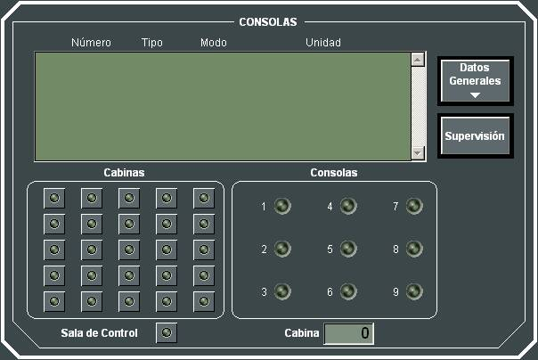

Estado de las Consolas
Pulsando en el botón Consola de los Indicadores Generales de la Pantalla de Control, el Instructor puede acceder al siguiente diálogo consultar el estado de las consolas:

Mediante este diálogo el Instructor puede consultar de forma directa el estado de las consolas que forman parte del Ejercicio cuando se está realizando una Ejecución en Red. Para ello se dispone de una matriz de leds cada uno de los cuales se corresponde a una de las consolas del Simulador Táctico Galeón y que según su estado indica lo siguiente:
A la izquierda de cada uno de los leds de la matriz se muestran los números de cabina – consola al que corresponde el led.
A la derecha de cada uno de los leds de la matriz se muestra el numeral – nombre de la unidad que se está controlando en la consola correspondiente en cada momento.
Los leds de la fila inferior se corresponden a las consolas de Instructor.
Realizando una pulsación sobre el led se muestra la ventana de Datos Generales de la unidad controlada por la consola correspondiente (ver apartado Datos Generales de Unidades).